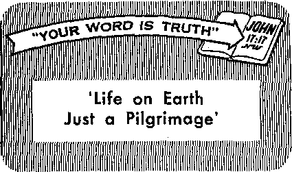

THE BOOK WITH ALL THE ANSWERS
A real light for twentieth-century paths! -------------------------------------------------------------------------------------------------:---------------------------------
Supreme Court of Canada Establishes Legal Equality for Jehovah’s Witnesses
Momentous victory heralded throughout the land
Venice
Magnificent queen of the Adriatic - -— How Old Is the Iron Curtain?
THE MISSION OF THIS JOURNAL
News sources that are able to keep you awake to the vital issues of our times must be unfettered by censorship and selfish interests. “Awake!” has no fetters. It recognizes facts, faces facts, is free to publish facts. It is not bound by political ambitions or obligations; it is unhampered by advertisers whose toes must not be trodden on; it is unprejudiced by traditional creeds. This journal keeps itself free that it may speak freely to you. But it does not abuse its freedom. It maintains integrity to truth.
“Awake I” uses the regular news channels, but is not dependent on them. Its own correspondents are on all continents, in scores of nations. From the four corners of the earth their uncensored, on-the-scenes reports come to you through these columns. This journal’s viewpoint is not narrow, but is international. It is read in many nations, in many languages, by persons of all ages. Through its pages many fields of knowledge pass in review—government, commerce, religion, history, geography, science, social conditions, natural wonders—why, its coverage is as broad as the earth and as high as the heavens.
“Awake 1” pledges itself to righteous principles, to exposing hidden foes and subtle dangers, to championing freedom for all, to comforting mourners and strengthening those disheartened by the failures of a delinquent world, reflecting sure hope for the establishment of a righteous New World.
Get acquainted with “Awake!" Keep awake by reading “Awake!"
PUBLISHED SEMIMONTHLY BY WATCHTOWER BIBLE AND TRACT SOCIETY, INC.
117 Adams Street Brooklyn 1, N* U. S. A.
N. H. Knorr, President Grant Suiter, Secreiary
Printing this issue; 1r550r000
Languages to which the magazine is published: Semimonthly—Afrikaans, English, French, French, German, Dutch, Italian, Japanese, Norwegian, Spanish, Swedish, Monthly—Danish, Greek, Portuguese, Hindi.
Offlros Yearly si tbnrri ption rate
America, U.S., 117 Adams St., Brooklyn 1, N.Y. ?1 Australia, 11 Beresford Rd., StrathflcM, N.S.W. 8/-Canada, 40 Irwin Ave., Toronto 5, Ontario $1 England, 34 Craven Terrace, I.nrtdon, tf. 2 7/-
New Zealand, G.P.O, Box 30. Wellington. C, 1 7/-South Africa. Private Bag, Eldoradopark, Tel. ?/-
Five cents a copy
Remittances should be sent to nfttre in your country in compliance with refill a lions to Eiutrantee ante delivery of money. circumstances are accepted at Brooklyn from countries where no office is located, by inf ernurlonnl money order only, Subscription rates in different countries are here stated in local currency. Notice of expiration (with renewal blank) is sent at least two issues before subscription expire. Change of address when .sent to cur office may he expected effective within one month, Send yoitr old as well its new address.
Entered as second-cLms matter at Brooklyn, N.Y,, Act. of Mandi 3, 1879. Printed In U.S.A.
CONTENTS
Personal Conduct and Human Relations 5
Supreme Court of Canada Establishes Legal
Equality for Jehovah’s Witnesses
How the Iron Curtain Split Christendom 17
Venice, Magnificent Queen of the Adriatic 24
Streets, Animals and Kindly People
“Your Word Is Truth”
‘Life on Earth Just a Pilgrimage’
£
COMMENTATORS say that up to and including World War n the cost of even a lost war was always somehow bearable, but that now not even the victor could stand the cost of an atomic war, so a reasonable choice between war and peace no longer exists.
Bernard Brodie put it this way: “At a time when the opponent will be able to do to our cities and countryside whatever we might threaten to do to his, the whole concept of ‘massive retaliation’—and all that it stands for in both military and political behavior—will have to be openly recognized as obsolete.”—Harper’s, October, 1955.
Drew Middleton, head of the New York Times’ London bureau, said: “Modern weapons make resource to war suicidal. It is thus not a question of giving diplomacy a chance. Diplomacy is the only chance we have.”—Times Magazine, October 30,1955.
Even air superiority no longer guarantees the homeland of any nation. Just one thermonuclear bomb could destroy a city. A few of them could thus destroy the entire wartime economy of any major nation. The Harper’s article referred to above warns: “There is a stark simplicity about an unrestricted nuclear war that almost enables it to be summed up in one short statement: be quick on the draw and the trigger squeeze, and aim for the heart. One then has to add: but even if you shoot first, you will probably die too!”
But will this threat of atomic weapons stop war? No! Man’s ingenuity has always found ways around the obstacles to aggression and slaughter. If all-out war between the big nations becomes so absurd, then an aggressor can still broaden his influence through aiding smaller nations to fight.
War has not passed into history, though the methods may change or some sort of non-atomic war develop as nations seek to get around the obstacle of atomic selfdestruction, of apparent national disaster for both sides. Unrestricted atomic war seems to be to the national interest of no nation, but war, as ridiculous and immoral as it is, will not be considered obsolete as long as it can advance the political interests of selfish men.
Is there no hope, no solution? Yes, there is a hope, a definite assurance that the end of the satanic rule that has caused earth’s troubles is at hand. But it will come in God’s way, not man’s. It will be through the direct intervention of the universe’s Supreme Sovereign. Does that sound strange? Not if you know what the Bible says about it, and how that book really does point to our time. Do you know what it says about this?
But why not learn this firsthand by studying that Book of books for yourself?
THE BOOK
"With ike
**Thy word w a lamp unto my feet, and a unto my path.” What follows will help you to appreciate the possibilities of God’s Word for shedding light on our paths in this mid-twentieth century.
E HAVE questions that perplex us, and the answers are found in the Bible. Of course, the Bible will not answer such a question as: Why doesn’t my television work? Men can and do figure out the answers to some of such questions. But all the really important questions they are unable to answer by themselves. That is why, in spite of man's technological progress, never before has he suffered so much from confusion, doubt, anxiety, fear and friction in all his relationships—social, political, economic and religious. Obviously modern man is lacking in wisdom. Why? Because, “the wise men are put to shame, they are dismayed and taken: lo, they have rejected the word of Jehovah; and what manner of wisdom is in them?”—Jeremiah 8:9, Am. Stan. Ver.
The Bible has been rejected by many because they think that science has proved the Bible unreliable. But the Bible cannot be accused of being unscientific. While not a book on science, whenever it touches on matters scientific it avoids conflict with scientifically proved facts. In it we find none of the errors that prevailed at the time of its writing, such as the geocentric theory, that the earth is the center of the universe, or that the earth is flat and supported by pillars. On the contrary, it tells us that God “hangs the earth on nothing,” and that “He sits over the round earth, so
hoppers.”—Job 26:7; Isaiah 40:22, Moffatt.
Note also that the Bible does not pretend to tell the age of the earth, but simply states: “In the beginning God created the heaven and the earth.”—Genesis 1:1.
As for the evolution theory: Since it is only a theory, it never having been observed to take place, and no proof for it ever having been found, it should not surprise us that the Bible does not agree with it. On the other hand, the testimony of fossils is in accord with the Bible, for the fossil record contains no truly intermediate forms, to indicate evolution from one natural species to another, nor any forms indicating evolution from simple to more complex species, which it should if evolution were true. The lack of all such evidence supports the Bible record that natural species were created each “according to its kind.”—Genesis 1:12, 25, New World Trans.
Does the Bible answer questions of law? Said Blackstone: “The law of God is binding over all the globe, in all countries, at all times. No human laws are of any validity if contrary to this.”1 And said another
high that its inhabitants look like grass-
d Cooley's Limttohons.
legal authority: "All the massive bulk of our English and American law may be reduced to a very few grand principles underlying the whole and which were enunciated by Moses.*’*
God’s law required justice. It placed a high value on life and yet made a distinction between murder and accidental manslaughter. Witnesses had to testify in the open and two or more witnesses were required to gain a conviction. A false witness was punished with the penalty he sought to have inflicted upon another.—Numbers 35:16-32; Deuteronomy 19:15-21.
As regards politics the Bible answers the questions as to what is required of rulers. The chief of state was not to amass wealth or wives; he was to read God’s Word daily so that he would not become proud and so that he would not presumptuously veer from the straight path of righteousness. Lesser rulers were to be “capable men, fearing God, trustworthy men, hating unjust profit.” How few politicians today fit that description!—Deuteronomy 17:15-20; Exodus 18:21, New World Trans.
And how should we conduct our business affairs? We are to be diligent at our business, not loitering; and we are to be generous, for the measure with which we measure will others measure to us. We are to have “accurate scales, accurate weights.” All of which is summed up in “All things, therefore, that you want men to do to you, you also must likewise do to them.” Only in the Bible is this rule stated in its positive form.—Proverbs 22:29; Leviticus 19:35,36; Matthew 7:12, New World Trans.
The Bible answers our questions as regards proper conduct. It commands moderation and self-control in regard to one’s temper, one’s tongue, and in regard to
1 Clark's Bibliail Law, IT 74. food and drink. It condemns fornication and adultery as well as the sex perversions that take such a terrific toll as regards physical and mental health and lessen the likeliness of happiness in marriage. It ordains monogamy, the only marital institution that is fair to womankind. The Bible’s laws regarding incest are eugenically sound.—Leviticus 20:10-16.
The Bible is full of the “practical wisdom of righteous ones.” It tells us: “The way of a fool is right in his own eyes; but he that is wise hearkeneth unto counsel.” “A soft answer tumeth away wrath.” “A fool uttereth all his anger,” but “a wise man keepeth it back and stilleth it.” It warns against bragging: “Let another man praise thee, and not thine own mouth; a stranger, and not thine own lips.” “Boast not thyself of tomorrow; for thou knowest not what a day may bring forth.” It warns against listening to flattery and shows that “better is open rebuke than love that is hidden. Faithful are the wounds of a friend.” Yes, what good common sense is found in the Bible!—Luke 1:17, New World Trans.; Proverbs 12:15; 15:1; 29:11; 27:2, 1, 5, 6, Am. Stan. Ver.
More and more social scientists are coming to realize the wisdom of the Bible’s requirement that the husband be the head of the home, that children obey their parents and that love be the binding tie. Were its commands taken seriously there would be no marital infidelity, no broken homes, no divorces and no delinquent children. “You must love your fellow as yourself,” covers everything.—Colossians 3:18-21; Leviticus 19:18, New World Trans.
The Bible also has the answers to ever so many questions regarding physical health, and that even though it was written from two to three thousand years ago. The Mosaic law provided protection from
contagious diseases: certain cases had to be quarantined; excreta had to be covered up; that which died of itself was unclean and was not to be eaten; nor were certain vessels or water that had come in contact with dead bodies to be used. Scavenger fish, fowl and beast were not to be eaten.3
The Bible’s answers also make for physical health by reason of the psychosomatic factor, which is receiving ever more attention from physicians and psychiatrists. It tells us that “a mercy heart doeth good like a medicine,” and that “better is a dinner of herbs where Jove is, than a stalled ox and hatred therewith.” Every harmful emotion would be eliminated if the Bible was followed.—Proverbs 17:22; 15:17.
If physical health can at times have a moral basis and therefore find its answers in the Bible, mental health can even far more so. In fact, more and more those concerned with mental health are appreciating that it is often a moral problem. That is the very theme harped on throughout the book, The Return to Religion, by H. C. Link, noted New York psychiatrist.
It is also the conclusion of one De Grazia, professor of psychology and psychiatrist, who in his book, The Errors of Psychiatry, shows up the folly of those who would treat mental ills while ignoring the moral problem. His cure of mental illness is for men to recognize the ideal man and learn to imitate him. His ideal? Jesus Christ.'
J. T. Fisher, veteran psychiatrist of more than fifty years, reaches a similar conclusion in his book, A Few Buttons Missing. Rather than waiting for people to become mentally ill he makes a bid for preventive measures. According to him religion is the best preventive and he specifically points to the Christian religion.
Sir George Vickers, writing in the British medical journal, The Lancet, March 12,
1 Job Relief iw a Workman, pages 39-43.
1955, shows that the efforts of psychiatrists to cure man’s mental ills by reducing stress and tensions make for uniformity, while the emphasis that religion places upon bearing up under such adverse conditions makes for saints, creative thinkers and superior personalities. He further states that “the most significant discovery of mental science is the power of love to protect and restore the mind.” And let it be noted that the Bible comes first in coun-seiing us and imparting strength to us to endure, and in emphasizing the importance of love it sets before us the examples of the love of God and of his Son.—1 Corinthians 13:1-13; 1 John 4:8; John 13:34.
Critics have long scoffed at the Bible’s story of the Flood, but it is verified by some ninety legends regarding a great deluge that obtain among primitive peoples in all parts of the globe. Only it can answer why sea shells are found on the highest mountains, seals in mountain lakes, why there are inland cemeteries of whales, why thousands of mammoths have been found Imbedded in Siberian wastes with green grass in their mouths.4
For many years critics have challenged the Bible’s reliability as history because of its accounts regarding the Hittites, Belshazzar and the fall of Jericho. But archaeological discoveries have proved the Bible true in these as well as in ever so many other similar instances. Critics also questioned the account of the seventy-year desolation of Judah, but recent discoveries reveal that “there is not a single known case where a town of Judah proper was continuously occupied through the exilic period.”5 Today, more is being mined, farming is being done and oil has been discovered in the land of Palestine, all because
1 The Deluge Story in Stone. Nelson, P. 140, " The Archaeology of Palestine, Albright, p. 142.
certain Jews went to the Bible for the answers to their questions as to what were the possibilities of the land of Israel.8
And not only does the Bible answer reliably all the questions relating to the past but it also lets us peer into the future. Its ability to do this accurately has been demonstrated hundreds of times. It not only foretold the desolation of the land of Judah, but also the exact years of its desolation, seventy, and the name of the one who would terminate it, Cyrus. It also accurately foretold the downfall of the empires of Babylon, Medo-Persia and Greece, even giving the detail that the empire of Greece would be split into four parts.—Isaiah 44:28; Jeremiah 25:11; Daniel8:3-8,20-22.
Then, too, hundreds of events in the life of Jesus were foretold centuries in advance. And Jesus Christ himself uttered many prophecies, chief among which are those relating to our day, to events taking place since 1914, such as world wars, famines, pestilences, earthquakes, increase of lawlessness, persecution of Christians and the preaching of the good news of God’s kingdom now established in heaven. The apostle Paul foretold the apostasy that took place as well as the perilous times in which we now find ourselves.—Matthew 24, 25; Acts 20:29, 30; 2 Timothy 3:1-5.
The Bible’s prophecies having been proved correct hundreds of times, we can also accept its answers to our questions as to what the future will bring. It tells of a thousand-year reign by the Prince of Peace, following Armageddon which "this generation” will experience. It promises a new heavens and a new earth in which righteousness is to dwell, when the knowledge of Jehovah will fill the earth, and that in God’s due time “he will wipe out every tear from their eyes, and death will be no more, neither will mourning nor outcry nor pain
• Render’s Digest, March, 1B54, p. ‘26. be any more."—Matthew 24:34; Revelation 16:14,16; 21:4, New World Trans.
The Bible answers our questions as to man’s origin. It shows that God created man in His image and likeness and placed him in the garden of Eden about 6,000 years ago with the command to fill the earth with his offspring, make the earth a paradise and exercise dominion over the lower animals. Therein we also have man’s purpose for being on the earth and what his eventual destiny will be.—Genesis 1:2628; Isaiah 45:18.
The Bible also answers our questions as to why we find evil and wickedness upon the earth; because of the rebellion of one of God’s angelic creatures to whom the first human pair had been entrusted and who became ambitious to be like God. Adam and Eve also share the blame, for they lacked appreciation of God’s gifts and his goodness to them. The Bible further answers our question as to why God, who is omnipotent, perfect in justice, omniscient and wholly unselfish, allowed wickedness to continue, namely, to demonstrate that he is supreme and that he can put creatures on earth that will prove faithful to him in spite of temptation and pressure. —Job 1, 2; Exodus 9:16, New World Trans.
In view of the ability of the Bible to answer all these important questions for us, is it not logical that we should also let it answer the question as to what is important and what should come first in our lives? Of course it is. And what does the Bible say? “Keep on, then, seeking first the kingdom and his righteousness, and all these other things will be added to you.” —Matthew 6:33, New World Trans.
That kingdom will be the answer to every problem of man.
DN EARLY times all classes, rich and poor, wore a ring of one sort or another. It was more than just an ornament. Even in the lives of scribes and philosophers, historians and biographers and kings, the ring was a dominant thing. Almost everybody believed that the right kind of ring at the right time and place would cure about any ill imaginable. The more precious the stone the more likelihood of its being endowed with medicinal properties.
Galen (A.D. 130 or 131 to about 200), a physician of Pergamus in Asia Minor, with his presumed knowledge of medicine, advocated the taking (in powder form) or wearing of the jasper stone as a cure for fever or dropsy, or for stopping hemorrhages and baffling witchcraft.
Perhaps the most potent medicinal stone was the toadstone. It has been recommended for almost every known disorder. For best results the stone was set open in a ring so that it would touch the flesh of the linger. The problem was how to procure and recognize a genuine toadstone. In the Kyrawides these directions are given: “The earth-toad, called saccos, whose breath is poisonous, has a stone in the marrow of its head. If you take it when the moon is waning, put it in a linen cloth for forty days, and then cut it from the cloth and take the stone, you will have a powerful amulet.” Sir Geoffrey Fenton had this to say: “There is found in heads of great and old toads a stone which they call borax or stelon. It is most commonly found in the head of a he-toad.” Upton offered this little bit of advice: “You shall know whether the tode-stone be the right and perfect stone or not. Hold the stone before a tode, so that he ■ may see it, and if it be a right and true stone, the tode will leap toward it and make as though he would snatch it. He envieth so much that man should have that stone.”
As utterly fantastic as this may sound today, “educated” men back there believed these fables as gospel truth. And even as recent as the fifteenth century, the Hortas 8am-tatis, the first illustrated books on drugs, had hand-illuminated pictures showing how one may extract a curative toadstone from a helpless toad. Other pictures illustrated how one might apply the bloodstone to stop a nosebleed.
Educators taught the medicinal virtues of stones. People lined up at the counters to buy “medicine rocks,” as they do today to buy aspirins. Rings made of silver coins were proclaimed to cure convulsions and fits. Nervous disorders disappeared when one wore a ring made of rhinoceros’ hoof. Johannes Agricola advocated the wearing of rings made from solidified quicksilver for sufferers of ulcers. Johann Michaeles, a physician of Leipzig, suggested a ring made of pure silver set in elk’s hoof, for all brain diseases. A special ring was designed to protect people from getting cramps. Cardinal Wiseman (1802-1865) is reported to have had in his possession a manuscript containing both the ceremony for the blessing of the cramp rings and that for the touching of those afflicted with the “King’s Evil.” An elaborate ceremony, which included prayers, holy oil, holy water and special signs, was held for the consecration of the “cramp" ring.
Rings were suggested for sneezing, coughing, running eyes, weak eyes, carbuncles, diseased kidneys, sty, suffocation, insomnia and for chasing away the demons. Not all these “ring cures” are ancient. In this twentieth century a rheumatism-cure ring sold for forty-two cents. Gold-covered rheumatism metal rings, guaranteed to wear twenty years, sold for $30 a dozen.
Ring cures are about as effective as idols in worship. As the prophet Isaiah stated: “Behold, they are all vanity; their works are nothing: their molten images are wind and confusion.”—Isaiah 41:29,
The title of a sermon recently given at New York city’s Broadway Congregational church was: “How to Be Friendly with the Devil.” People today seem to have no trouble at all being friendly with the god of this world; rather, they need to be taught how to be friendly with the God of the righteous new world, Jehovah.
SUPREME COURT OF CANADA
ESTABLISHES LEGAL EQUALITY FOR
Quebec police condemned for breaking up religious meeting
Absolute Liberty for Each Religion Is Supreme Court Unanimous Ruling, Jehovah’s Witness Chaput Gets $2000.” “Rule Police Raiders Violated Rights of Jehovah’s Witness.” These were the streamer headlines in the Montreal Star and Ottawa Citizen of November 15, 1955, when the Supreme Court of Canada rendered another historymaking decision in the long and successful battle waged by Jehovah’s witnesses for religious liberty and which keeps the province of Quebec from taking its place among the police states of the world.
The Montreal Star, largest newspaper in the province of Quebec, stated: “The Supreme Court of Canada today ruled that the Witnesses of Jehovah and all other majority and minority religious groups in Canada have absolute liberty to indulge their beliefs. The Court, in a unanimous judgment delivered by Chief Justice Patrick Kerwin, upheld a damage action by a member of the sect against three Quebec Provincial Policemen who broke up a religious meeting at his home in 1949. It awarded him $2000 damages and delivered a stirring definition of freedom of religion and the importance of maintaining it. The judgment also stated clearly that police
By ‘'Awakel” correspondent in Canada
officers have no right to interfere with religious gatherings, except to prevent an infraction of the law. It stressed categorically that since Canada has no official state religion, no one religious group has the right to impose its will on a minority.”
This is the result of a six-year-long struggle to legally establish the right of freedom of worship and free-
dom of assembly in Quebec. Liberty-loving Canadian citizens were watching with great interest and concern the outcome of the case. But what caused this issue to come before the Supreme Court of Canada? What stirred the nine judges of the nation’s highest tribunal to hand down such an emphatic pronouncement on the fundamental liberties that are sacred to citizens of all nations?
It happened six years ago, September 4, 1949, in a peaceful, little Quebec village on a Sunday afternoon. A number of earnest Christians were assembled in divine worship at the home of Mr. Esymier Chaput, one of Jehovah’s witnesses, a well-respected
NIPPING IT IN THE BUD
and lifelong resident of the community. A visiting minister was peacefully addressing an audience of some thirty persons who were quietly listening to his Bible sermon dealing with the kingdom of the Lord Jesus Christ and how it would bring blessings of peace, happiness and life to the people.
As he was reading from the Catholic Douay Version of the Bible, suddenly the door opened and in marched three Quebec provincial police. For a minute or two they listened to the reading of the Bible and then announced that the meeting must stop. The presiding minister said the meeting was almost over and asked that they wait until he finished his sermon. No! they would not! Instead they seized the Bible and textbooks. The minister continued his sermon, but the police again announced the meeting was broken up, ordered everyone out of the house and this time took the minister by force to the Quebec boundary, where he was ordered out of the province.
No charges were laid and no further action was taken by the police. Instructions from the local priest and their superior officer had been obeyed, and there the matter ended as far as they were concerned.
But what about the invasion of the home? the terrorizing of the assembled worshipers? the confiscation of a treasured personal copy of the Bible and companion literature? the kidnaping of the minister? His home having been the object of a police raid also put Mr. Chaput’s good name in question; the stopping of the meeting gave people the impression that an illegal or seditious assembly had been conducted. Something had to be done! No home was safe. Any church could be invaded on the mere word of a local priest.
Action was taken against the three provincial police officers. Mr. Justice Fortier, trial judge of the Quebec Superior Court, held that the police were immune from suit, and dismissed the action. He therefore protected the police in their violation of Christian and civil liberty. This made things worse than before. The court had supported this terrible police action.
It was necessary to appeal to the Quebec Court of Appeal, and there the case was argued before three judges, Justices Bissonnette, Casey and Hyde. To everyone’s amazement they too upheld this disgraceful and illegal police action. They took occasion to make derogatory comments about Jehovah’s witnesses, which were both irrelevant and untrue. The fantastic assertion was made that Jehovah’s witnesses were conducting a seditious meeting, though the minister was only reading from the Catholic version Bible!
It was necessary to take the matter farther by appeal to the highest court of the land. It is a good thing for the Canadian people that Jehovah’s witnesses are prepared to fight for the God-given liberty to preach the gospel of the Kingdom. Despite all these adverse judgments in Quebec, they did not give up. The nine justices of the Supreme Court listened with astonishment and indignation as the burning, shameful actions of priest-inspired persecution were laid bare before them. For three days in May, 1955, they listened to the argument. (See Awake! July 22, 1955.) During the hearing they indicated their disapproval of the police action. The policemen’s defenses were demolished by the judges and their attorney had to abandon them in open court. On November 15,1955, a unanimous decision in favor of Jehovah’s witnesses and freedom of worship was rendered. And what did the justices have to say?
When judges deal justly oppression ceases, the poor are protected, and God-given
rights of the people are maintained. The nine justices unanimously condemned the actions of the police, reversed the judgments of the Quebec courts, awarded to the appellant $2,000. damages and costs throughout. The court costs of such drawn-out litigation will be more than the damages.
There are four main grounds upon which the Supreme Court decided the issues: (1) Duty of the police to obey the law; (2) Error of the lower court’s judgment; (3) Civil and religious liberties of the people buttressed; (4) Damages awarded for denial of liberty.
In modem times the rise of dictatorship has led to heavy-handed police action. The strong-arm methods of the police state have even invaded the democracies. The democratic concept of the police as servants of the public and enforcers of the law has changed in many places to the totalitarian view, that the police are the law. This was the thinking of these Quebec police and the Quebec courts supported them. But the Supreme Court pulled them up short and raised a bulwark against their encroachments.
Justice Taschereau said: “I have no doubt that the three respondents’ (the police) conduct was highly reprehensible, and of a nature to offend deeply the Plaintiff-Appellant. He clearly had the unquestionable right to convene at his home the meeting where some forty persons were gathered, and to invite Gotthold as a preacher.
■ “Moreover, it cannot be said in justification of this action that the respondents acted in obedience to the order of a superior officer. Obedience to the order of a superior is not always an excuse. The subordinate must not act thoughtlessly, and when he realized that the facts that brought about the order which he has received are ill-founded, he should not carry out the order . . , When they arrived on the premises, the three respondents made no investigation whatever, did not read any of the pamphlets, saw nothing and heard nothing which was of a seditious character or was illegal. Obviously they must have realized easily the futility of the complaint of Father Harrington. They had no serious information to justify their act, and I do not think that they can be absolved for what they have done.
“I find it incredible that a public officer, entrusted with high responsibilities, whose task it is, not to play the role of a persecutor, but to apply the laws of the land, did not realize when he arrived on the premises that what was going on was clearly in conformity with the law. ... it was fault on their part, although they had the opportunity of appreciating the absence of any illegality, in persisting in the seizure of pamphlets and in ordering the persons whom the plaintiff had legally invited in his house, to disperse. They have committed a fault and they cannot be absolved. They had no legal justification to disperse this peaceful meeting.”
The police acted in defiance of law and tried to defend themselves on the ground that a superior officer had ordered them to do this. Justice Kellock (joined by Justice Rand) ruled that police officers must obey the law. Unlawful orders of a superior officer are no defense to a subordinate who carries them out. He laid down the law on this point: “What was the public duty here which the respondents were executing? Not duty to their superior to carry out his direction. The public duty is that annexed by law to the office of a peace officer, a duty to maintain the peace, to enforce the law by preventing violations of it and by taking appropriate action to bring transgressors to justice..... What they did was not in execution of a public duty but in carrying out an illegal instruction.”
Justice Locke was quite caustic in condemnation of the police. He recited Sections 199 and 200 of the Criminal Code of Canada which make it a criminal offense to interfere with a religious meeting and to interrupt a minister in the course of conducting divine service. He then added: “The actions of the respondents were thus wholly unlawful and criminal in their nature and they were liable to prosecution and imprisonment . . . there is, in my opinion, no defence to this action. I must confess my inability to understand how it can be suggested that a police officer is acting in execution of his duty in committing a criminal offence. I aim equally unable to understand how a person can deliberately commit a crime or tort in good faith . . . it is sufficient to say that to commit torts or criminal offences is no part of the functions of any public officer."
Justice Kellock in particular analyzed and pinpointed the errors of the Quebec Court of Appeal and said: “The learned judge (Justice Bissonnette) also considered that the fact the respondents were acting under instructions constituted a complete defence but he did not refer to any authority in support of.this view.” Judge Bissonnette had said: “It is proved Jehovah’s witnesses had been chased from this locality.” Justice Kellock remarked:
“When the learned judge says that it was proven that Jehovah’s witnesses had been chased away from the locality in question, he is' speaking outside the record. There is no such evidence. Had there been it would have been entirely irrelevant. When, however, the learned judge says that it was well known to the respondents and to their superior that Jehovah’s witnesses were carrying on activities of a seditious character, he is again speaking outside the record. None of the respondents so testified.” The Quebec. Court of Appeal was justly condemned. The Supreme Court showed that the Quebec court illegally wandered out of the record to feed upon the fodder of untrue rumor and gossip.
Justice Kellock continued: “Nor am I able to say what the learned judge (Bissonnette) means by his statement that ‘Everybody knows that they were disgraced in Quebec and there has been no change toward them.’ It can hardly be meant that such a fact, even if proved, would have deprived the appellant of the protection of the courts. Such a suggestion would amount to outlawry."
And that is exactly what Justice Bissonnette did. He, in effect, declared that because Jehovah’s witnesses were unpopular and disliked by the Catholic Church and her supporters they were outside the law and any police officer or other person was at liberty to attack them with impunity. This thinking is reminiscent of the medieval law of heresy. Heretics were outlaws and had no rights. The Quebec judges here were acting as a heresy court and not as a court of law to put Jehovah’s witnesses in the same position as medieval heretics.
The Catholic Hierarchy in the province of Quebec for generations has presumptuously assumed the status of a state church and has denied equal rights to minority groups. To enforce her majority rule she has resorted to political pressure, influence on the police, censorship, commercial pressure and even to mob violence. While adopting this course inside Quebec she has, in other provinces where she is a minority, vigorously demanded minority rights. Strange though this may be to the reader, yet it is exactly in harmony with Catholic philosophy.
We quote the following well-known Catholic writer, Louis Veuillot (Lecky, Democracy and Liberty, II, p. 25): “When you are masters, we claim perfect liberty for ourselves, in accordance with your principles. When we are masters, in accordance with our principles, we will refuse it to you.”
The Jesuit publication Civilta Catolica declares: "The Roman Catholic Church .. . must demand the right of freedom for herself alone ... in a state where the majority of the people are Catholic, the Church will require that legal existence be denied to error [i.e., any belief other than CatholicJ, and that if religious minorities actually exist they shall have only a de facto existence without opportunity to spread their belief ... In some countries, Catholics will be obliged to ask full religious freedom for all, resigned at being forced to co-habitate where they alone should rightfully be allowed to live. . . . The Church cannot blush for her own want of tolerance, as she asserts it in principle and applies it in practice.”
However, the judges of the Supreme Court of Canada have refused to accept such Catholic injustice and Jesuitical double talk as applicable to the law of Canada. Canada can be thankful that she has on her Supreme Court bench men whose devotion to justice will not allow them to be led by such religious sophistry but have instead taken a firm stand for principles of liberty and confirmed the equality of all citizens before the law.
Mr. Justice Taschereau, senior judge from Quebec, and a French Roman Catholic, wrote an outstanding statement of principles of liberty. He lashed out against intolerance and failure to respect the liberty of others. His judgment is a lecture in civil and religious liberties to priests and others who would deny such rights to all save themselves. He emphatically declares the law of Canada as providing equal rights for all, as follows:
“In our country there is no state religion. All religions are on an equal footing, and Catholics as well as Protestants, Jews, and other adherents to various religious denominations, enjoy the most complete liberty of thought. The conscience of each is a personal matter and the concern of nobody else. It would be distressing to think that a majority might impose its religious views upon a minority, and it would also be a shocking error to believe that one serves his country or his religion by denying in one province, to a minority, the same rights which one rightly claims for oneself in another province.”
The reader should allow this clear statement of law to burn itself with lasting impression on his mind. It is more than a statement of law. It is the enunciation of a principle of justice that applies in all lands and to all people. No one who wants liberty should deny liberty to another.
Maybe the Catholic clericals or authorities in Quebec thought they were serving their church and province by their actions against Jehovah’s witnesses. Remember that the police invasion of Chaput’s home was the result of a complaining Catholic priest named Harrington. For more than twenty-five years Jehovah’s witnesses in the province of Quebec have suffered kid-napings, mob assaults, beatings, arrests and other forms of persecution. Since 1944 alone there have been over sixteen hundred cases. Time after time it has been revealed that Roman Catholic priests have sponsored the persecution. Even in the present case the disgraceful denial of liberty traced back again to the Catholic Church. The priests have taught the Quebec people that to persecute Jehovah’s witnesses is the way to serve their religion. Justice Taschereau, as a leading Roman Catholic layman, has shown the shocking error (and,
incidentally, the shocking injustice) of these practices going on under the name of religion.
The right of freedom of assembly has also been set forth in a very forceful manner. Justice Taschereau said: “The plaintiff-appellant clearly had the unquestionable right to convene at his home the meeting where some forty persons were gathered, and to invite Gotthold as a preacher.”
Justice Locke was equally definite: "The appellant, as a resident of the Province of Quebec, was entitled to the privileges enjoyed by all of Her Majesty’s subjects in that province under the provisions of c. 175 of the Statutes of Canada, 1851, by which it is declared: 'That the free exercise and enjoyment of Religious Profession and Worship, without discrimination or preference, so as the same be not made an excuse for acts of licentiousness, or a justification of practices inconsistent with the peace and safety of the Province, is by the constitution and laws of this Province allowed to all Her Majesty’s subjects within the same.’ The flagrant violation of that right by the respondents was a grievous wrong to the appellant.”
For the first time in Canadian history the Supreme Court has ruled that religious and civil liberties belong to the people and anyone who denies or takes away such rights, whether a state official or private individual, can be condemned to pay damages as compensation for such loss. This judgment will help to protect these precious liberties by providing a means of enforcing them.
The police sometimes believe that they can arrest people, seize personal property, invade homes and places of worship and otherwise interfere with the liberty of citizens and still not be liable to process. Justice Locke shows that such a view is wrong: "... when, in this small community and the surrounding country, it was learned that police officers had entered the appellant’s house, prevented the carrying on of a religious service, dispersed those assembled and ejected the Minister who had been conducting the service, it would be generally understood that the appellant had been carrying on activities of a criminal nature, and, with others, participated in the commission of the offence of sedition. The fact that a so-called ‘raid’ had been made, that books and pamphlets had been seized and the meeting in the appellant’s home broken up, also received wide publicity by being reported in both an Ottawa and a Pembroke newspaper.
“The flagrant violation of that right by the respondents was a grievous wrong to the appellant and the damages sustained were undoubtedly greatly aggravated by the matters which I have above referred to. The appellant suffered from the false imputation that he had been engaged in committing the criminal offence of sedition at the time referred to. The appellant’s right to maintain his good name and to enjoy the privileges conferred upon him by the Statute of 1851 are absolute and very precious rights and he is entitled to recover substantial general damages.
“While, in my opinion, the damages should be assessed at a higher amount, I defer to the views of the other members of the Court that they should be fixed at the sum of $2,000.”
Justice Kellock also strongly emphasized the right to compensation for such wrong: “The appellant suffered an invasion of his home and his right of freedom of worship was publicly- and peremptorily interfered with. In addition to that, his property was seized and kept. He was humiliated in his own home before a considerable number of people.
“I would therefore allow the appeal and direct the entry of judgment in favour of the appellant for $2,000.00 against the respondents jointly and severally. The appellant should have his cost throughout.”
These statements of law by the nation’s highest judicial body are a bulwark to the religious liberties of the people and put teeth into the law so that their rights can be enforced by action in the courts.
The people of Canada were deeply moved by this case which meant so much to all. Radio and television commentators featured the case from coast to coast as one of vital interest to the people. Many libertyloving Canadians rejoiced with Jehovah’s witnesses in this victory for righteousness. Typical of the reaction are the following quotations from the many editorials that have appeared.
The Ottawa Citizen remarked, November 16, 1955: “As the Supreme Court has affirmed, the police in a free society must use good sense and good judgment. The Chaput decision is a salutary warning against arbitrary action by authorities charged with enforcing the laws.”
The Windsor Daily Star, November 17, 1955, said editorially: “Freedom of religion is a primary possession of free men. Together with freedom of opinion and expression, it is fundamental to our civilization ... It is not enough to insist upon freedom of religion for ourselves. We must insist upon it also for others. If we deny the right to others, we ourselves some day may be denied it. Mr. Justice Taschereau is to be complimented upon his unequivocal language. It shears away the hypocrisy with which some have approached the issue. His remarks coincide with the highest traditions of justice and with the finest concept of freedom of religion.”
The Toronto Daily Star in an editorial of November 17, 1955, remarked: “Thus the highest court in the land reversing the judgment of two Quebec courts, brought down a decision upholding religious freedom for all Canadians . . . These judgments go a long way toward assuring Canadians the right to practise their religions freely and openly in all parts of the Dominion.”
This is the first time in Canadian history that the Supreme Court of Canada has declared itself on the right of freedom of assembly. The case has also established the precedent that damages can be awarded for denial of civil liberty in order to prevent the province of Quebec from being a police state. The case is the latest in a long series of legal battles fought by Jehovah’s witnesses in Canada to preserve their freedom of worship in Quebec and to make secure the blessings of liberty belonging to the Canadian people.
Jehovah’s witnesses recognize and appreciate the devotion to law and justice that has been shown again by members of the Supreme Court of Canada. They recognize, however, a higher power, that of Jehovah God, who is the real protector of his people so that many more people of good will in Quebec may yet come to a knowledge of God’s truth and become true worshipers of the Most High God Jehovah.
A Lesson in Humility
What does a person of about 140 pounds contain? Pageant magazine of March, 1954, answered: “Enough fat for seven cakes of soap. Enough carbon for 9,000 pencils. Enough phosphorus to make 2,200 match heads. Enough magnesium for a dose of salts. Enough iron to make a medium-sized nail. Enough lime for whitewashing a chicken coop. Enough sulphur to rid one dog of fleas. Enough water to fill a gallon jug.”
Winstom Churchill mentioned it as far back as 1946. On March 5, in a speech at Fulton, Missouri, U.S. A., the then prime minister of Great Britain declared: "From Stettin in the Baltic to Trieste in the Adriatic, an Iron Curtain has descended across the Continent.”
Stalin’s Russia had rung an impenetrable censorship down along this line, had sealed off herself and her fat midriff of European satellites, dividing the Continent into two worlds, separating the East from the West —the Soviet Communist domain from the democratic domain.
Churchill lamented that scarcely had the first year tripped by since the close of World War II before the victorious Allies were splitting asunder, splitting ideologically poles apart; even though Russia was as much a part, even more a part of traditional Christendom than France or Britain. Forces stronger than Christendom’s religions had thrust through the sham alliance, had ripped Christendom into two big hunks by this ideological, economic, military iron curtain.
But was that the origin of the iron curtain? ,
No. Churchill in 1946 might have popularized the name for the benefit of the Western part of Christendom. But it was not he who even coined the name. Had not Hitler’s Nazi propagandists used the term "iron curtain” before World War II when describing how the menacing Communist power had smothered out the church-and-czar rule of Russia and sealed off its mammoth sprawling borders from the rest of the world?
So when did the schism called the "iron curtain” first crack the face of Christendom?
More than 1,000 Years Ago!
Dramatically, American columnist and author Walter Lippmann sketched the history of the iron curtain in a speech printed in Rotarian magazine for October, 1947. Said Lippmann:
“Let us not forget, though I think we often do forget, that between East and West there has been an iron curtain for much more than 1,000 years. It existed long before Stalin and Molotov. It existed before there was such a thing as Russia, or Britain, or France, or Germany. It existed before America was discovered. There has been an iron curtain dividing the East and West of Europe since the Roman Empire became irreconcilably divided, with one capital in Rome and another capital in Byzantium, and since Christendom became divided into the Latin (Roman) and Greek (Orthodox) churches. The iron curtain is not new. It is very old. It is one of the oldest, deepest and greatest facts in history. Throughout the Middle Ages and throughout modern history there has existed this division, this schism within Christendom. It has never been overcome. . . .
"Let us all remember this. Let the Russians remember it. Let us remember it.
What we are now doing as Allies who must settle the war, and as members of the United Nations who must preserve the peace, is something immensely great. We are struggling to overcome the division of 1,000 years. We are trying to unite civilizations which have been separated for many centuries, and have grown to be very different in the course of those centuries.”
The iron curtain, Lippmann indicated, is essentially religious in origin. It is the fruitage of Christendom’s religions’ having placed allegiance to political ambitions above loyalty to God. The iron curtain still stands as a monument to the ugliest, oldest sore within the festering body of Christendom. It harks back to the fourth century— to the time when Emperor Constantine moved the capital of the Roman Empire from Rome to Constantinople. But later, A.D. 395, the Roman Empire was divided between Honorius and Arcadius. Arcadius was ruler of the Eastern wing of Christendom from Constantinople. Honorius ruled the Western or Latin empire. Then barbarians overran the West (Alaric the Goth captured Rome A.D. 410). The bishop of Rome, having grabbed up the fallen title of the pagan emperor, that is, the title pontifex maximus, finally ascended in power over the Western wing of torn, rattled, disrupted, benighted Christendom. The papacy ruled, in a sense, over half the world. It claimed jurisdiction over the whole.
On the other hand the patriarch at Constantinople never forgot, any more than did the Eastern princes, that once Rome had been ruled from Constantinople. Now the empire was divided. Politically it was developing irreconcilable civilizations. The pope at Rome could no more enforce his authority over the East than the patriarch at Constantinople could enforce his authority over the West. Why, then, should not the patriarch feel at least equal in authority and prestige with the pope?
The more the pope asserted his claims the hotter grew the indignation of the patriarch. As the political breach widened down the centuries so did the difference in dogma between Roman and Greek Catholicism. They fought over the celebration of Easter, the single or double nature of Christ, idol worship, and whether the holy spirit proceeds from both God and Christ.
At one point the framework of the iron curtain appeared to melt in the peaceful crucible of the seventh general council, which convened in the East at Nicaea in 787. This council rounded out, by its decrees, the entire body of doctrine of the “Universal Christian Church.” The ecclesiastical schism was apparently filled with the cement of universal dogma, replacing the iron curtain.
But after a little more than two centuries of strain, stress and jealousy, battered by the pestle of political ambitions, the creedal cement proved to be brittle clay and down came the unified house of Christendom, splintering from its sandy foundations right up through the roof. This time Eastern and Western Catholicism split over the matter of bread, the altar wafer— whether to use leavened or unleavened bread in the sacrifice of the mass. The pope sent a delegation trotting to Constantinople, hoping to settle the argument. Haughtily the patriarch at Constantinople refused to receive the delegates. The delegates then and there excommunicated the patriarch. Church dignitaries do not abuse one another to that extreme and then kiss and make up, not ever. These ecclesiastical fireworks shook the world in June, 1054, and Christendom has been divided, East from West, to this day.
After 1054 the church at Rome grew in power, shook off government control. It became independent, self-asserting. It took on the responsibility of government and the preservation of the social. order. It crowned emperors and kings. Victorious over the West, the pope looked for other worlds to conquer. Had the church not assumed the name “Catholic’’? Could it be Catholic without becoming universal? Could it become universal without achieving world domination?
But there always remained the hateful exasperating Eastefh Orthodox wing of what had started out to be the Universal or Catholic Church, which the pope could not bring back in allegiance to Rome.
For, meanwhile, the church at Constantinople was not idle in its own pastures. Its influence overspread the vast reaches of Russia. In time the Russian outgrowth, although deriving its origin, its creed and its ritual from Constantinople, ascended in importance and power while the mother church declined. But as a child of Constantinople the Russian church inherited the animosity that Rome had always leveled at the Eastern church. Russia felt the first kiss of death from the papacy when, at the birth of the twelfth century, the orders of the Teutonic Knights and of the Brethren of the Sword, overrunning Lithuania and Livonia, and, flying the banner of the Latin church, attacked Russia, crusading not only for conquest but for establishment of papal sovereignty. But this sword of the church got blunted against the iron curtain.
Then in 1237 the Tartars invaded Russia. Pope Innocent IV proposed a deal. He would rouse European rulers in a crusade and save Russia from the Mongols. Innocent had his price, of course—union of the Russian church with Rome and the pope acknowledged as supreme pontiff over all. A more stinging and infuriated turndown than Innocent got is hard to imagine: the princes and the church of Russia preferred to be conquered by the barbarians!
Just about all the angles were tried by the popes—from the buttered tongue to Jesuit infiltrations to the blood-drunk sword—notably in 1517, 1581 and 1717. Then Peter the Great of Russia, evidently an observing though ruthless soul, eliminated the possibility of the spiritual ruler’s being considered superior to the state ruler by removing the supreme patriarch and replacing him with a hierarchy of clerics responsible to the state. That transformed the Russian church organization into a department of the state. Now to conquer the Eastern church the pope at Rome would first have to conquer the Russian Caesar or czar.
This tug of war between East and West has seethed, first hot then cold, across the iron curtain down the centuries. But here, in our generation, a grisly new challenger has knocked down the front doors of Christendom’s tottering house. He has shattered the composure of her dueling chiefs and given them something else to think about. In 1917 this modem Attila smashed the Russian czar and his cowering church and set up a Communist dominion over Russia. Following World War II the implacable marplot pitched camp on the front lawn of the pope, in.Italy, organizing the biggest, strongest Communist party within Christendom, excluding only Russia.
Why is it that communism—not a child of paganism but of Christendom—sprang into power first in the heartland of Christendom’s eastern division, Russia, and within thirty years found its second-most fertile ground in the heartland of Christendom’s western division, Italy? Is it any wonder that the social diagnosticians of our times are seeing in communism a reaction against the politico-religious sys-terns spawned by Christendom’s two Catholic houses?
An ironic footnote to the East-West struggle within Christendom is that on either side of the iron curtain her religious heads are piping almost word-for-word disclaimers that they harbor any ill will against communism insofar as its being a system of economic control is concerned. Declared the Russian patriarch in 1945:
“Communism, aside from its materialistic and atheist theories, is quite acceptable to the Orthodox. Monasteries are based on Communist foundations.” “We consider that Joseph Stalin has created the best possible condition for the work of the Church.” “There are no principal problems remaining unsolved between the Soviet State and the Russian Orthodox Church.” When that patriarch died, his successor, Alexei, wrote a letter to Premier Stalin congratulating him as a man “placed by the Lord over the peoples of our great nation.”
■ Since then the Vatican’s official mouthpiece L’Osservatore Romano spoke up for the pope: “The pope does not condemn Communism as a purely economic system, but because it denies God and the supernatural. That is, insofar as it is atheistic.”
If it has been within the very heartland of both of Christendom’s chief religions that communism came to power, it is a joke in the wind to hold up either as a world-saving defense against what they cannot sweep off their own doorsteps. As to how it all will end, there are a hundred and one speculations.
Some hope that the religious East and West will wind up their centuries-old disagreement and bury the iron curtain, leading rather than trailing along on the pathway to world peace. Some say that if the Communist political powers can coexist with the democracies, then the churches of East and West can resolve their feud as they did at the seventh general council in 787. Others insist that regardless of what peaceful understanding the political East and West might reach, the papacy will never be silent, will never let peace endure, until the church of Moscow bows to the church of Rome.
Others shout that the only way to rid Christendom of her insufferable iron curtain is by a Western crusade bigger than Hitler’s that will successfully annihilate communism and all its supporters, religious and otherwise, and “rechristianize” the Russians.' Just as loudly others cry out that the Communist East will overrun the West and the great red bear will demolish the papacy as it did the patriarchy.
Then, of course, there are those cheerless souls who predict that the peoples of Asia and Europe, sickened by both divisions of Christendom, will rise up, throw off communism and its lackey Orthodox Catholicism, throw off the papacy and all it stands for, melting the iron curtain and all of Europe with it in one grand finale of anarchy.
But whatever the outcome, the iron curtain is not new. It is one of the oldest, deepest and greatest facts in history. Its foundations were burned into the face of Europe by the first acid quarrels between the Western pope and the Eastern patriarch. Its ramparts were raised to frowning heights when Catholic Hitler’s crusade failed to free Russia and Orthodoxy from communism.—Contributed.
__ — • ■ - . .4 GAINST SPEED
"g In an automobile accident in which someone is injured, chances ci a death at 40 miles an hour are 1 in 16; at 55 miles an hour 1 in 12; at 65 miles an hour the chances are 1 in 6.—Science News Letter, July 2, 1955.
Transient Guests
At Ipswich, England, 5,000 birds got lost in a fog, so they dropped in on a hotel just as the permanent residents were finishing the soup course. In a mighty chirping chorus, the starlings insisted on lodging for the night. Since the hotel roof was too cold for many of them, some tumbled down through chimneys and others just flew in through open windows. When the human guests dashed upstairs, starlings were fluttering around ceilings and sitting on furniture, wash basins and picture rails. The manager spent all night evicting them. By dawn all had gone except one feathered inter-loper found asleep in an unoccupied hedroom. and resumed his leisurely lope. Passengers on the express train by this tin were getting vexed by its tormenting sluggishness, except those up front who were having fun shout
ing: “Giddap there, Fido!” Pacing a train is hard work but the dog managed to do it, all the way to the Thirty-fourth Street station. There the pup, exhausted, sat down for the fourteenth time in two miles. Transit employees rescued the pup and gave it a drink of water. Passengers cheered; and with the canine impediment removed, traffic on the Brighton Line got a bit more brisk.
Bedtime
In Benevento, Italy, a cow was missing. Farmer Pietro Filippo searched everywhere for the cow until he was weary. Then he decided to go home and take a nap. He found the cow—snoozing in his bed.
Bull Session
At the conservatory of music in Dijon, France, an orchestra was rehearsing Beethoven’s Fifth Symphony. The rehearsal came to an abrupt halt when a big red bull ambled into the hall. The violinist stopped playing, his bow poised in mid-air. The flutist ran out of breath and the kettle drum ceased. For fifteen minutes the bull stayed until keepers from a neighboring slaughterhouse drove him out.
Canine Impediment
In the Transit Authority files in New York city there is a report of an escapade probably filed under "D”—for dog. it tells how one day motorman Horace G- Belton, who operates a BMT Brighton Beach subway express train, spied a dog on the tracks as his northbound train was passing through Prince Street station. He slowed down the train. The pup looked back, broke into a light trot and headed north at about three miles an hour. The motorman worked his cab whistle, which ought to frighten even a dog. But the pup seemed to like that. He sat down. The train slid to an abrupt stop. The pup grinned at it, wagged his tail
Feafhered Freebooter
When a mysterious poacher began raiding Sir Winston Churchill’s lily pond, snatching up 300 of his prize goldfish, it was almost serious enough to call Scotland Yard. But the head gardener of ancient Walmer Castle solved the case. He hid in the bushes and at twilight saw a three-foot heron glide in on soundless wings. The man stalked the bird for more than two hours, steadily closing in. Then the net closed, and the feathered freebooter, caught red-handed snatching succulent snacks from the pond, was captured. The freebooter's fate: a “life sentence” at London’s Regent’s Park Zoo.
Humans were created to dwell within a realm bounded by two limits, the infinitesimally small and the infinitely large. Beyond these two limits lies a realm unfathomable to imperfect man. Curiously one may inquire, How near can one approach to these limiting boundaries? What is the smallest entity possible a person can comprehend? Is there anything in the nothingness of space? To answer these questions, numbers must be used. The nearer the approach to the limiting boundaries, the more awesome in size numbers become^ being either infinitesimally small or infinitely large, depending upon which direction from unity (1) a person approaches the boundaries.
Everywhere around us may be seen objects of ordinary size—houses and trees, Jakes and rivers, or animals and people. Objects beyond the ordinary in size attract more than the usual interest. Notice how the young in the animal world have almost a universal appeal to both youth and adult alike. Or, notice how the unusually large in size commands attention and sometimes awe and fear. Who is not thrilled at the sight of majestic mountain heights with their towering snow-covered peaks silently pointing upward to the unlimited expanse above? Or, who has never been shocked out of his complacency by the brilliant flashes of lightning and the
accompanying peals of loud thunder during particles—ninety-two of which are protons a severe electrical storm? While the unusu- . and one hundred and forty-six neutrons—
large in size does attract more than ordinary Atenfcffi,At Is only vAreft mv
and infinity that amazement is aroused.
In our quest for the smallest entity in the universe known to finite man, we shall pass by : such so-called mi-' nuteobjects as living r cells, microbes and viruses as being far too large for consideration here. Any other object, whatsoever, to be seen in the most powerful 1 electron microscope in existence is also far too large. We must go to the foundation stones of the universe, to atoms and their constituent elementary particles. Notice how near they approach to the infinitesimally small in size.
Atoms. Are Next Stet
Using complex scientific measuring instruments, physicists can determine quite accurately the size of an atom and the much smaller particles composing it. Even though these are far beyond the range of visibility, sound reasons exist for believing that the structure of invisible atoms is a miniature replica of the solar system in many respects. Both the atom and the universe, one on the small end and the other on the large end of the scale of sizes, display evidence of divine intelligence.
Examining an atom of uranium, for instance, the heaviest among the ninety-two known natural elements, one is amazed at its complexity, symmetry and minuteness. Experimental evidences substantiate the belief that the core of a uranium atom is composed of two hundred and thirty-eight all bound together in a dense compact mass by a immensely powerful force. Out at a great distance (in the atomic world) from the core, which very nearly equals the relative diameter of earth's orbit around the sun to earth’s diameter, there are ninety-two electrons, all revolving rapidly around the core in ordered layers and orbits. However, instead of revolving in a single plane saucerlike as do the planets around the sun, there is a marked difference in that respect inside atoms. It is believed that the ninety-two electrons occupy discrete layers, each containing a predictable number of electrons. Moreover, in fach layer they revolve around the core in all directions so that the atom as a whole may be envisaged as a multilayered onionlike solid sphere. While its outward appearance may be imagined to be solid, in actuality the atom as a whole is more than 99.999 per cent empty space. Its interior is simply filled with nothing tangible, not even air, because a single molecule of air is so large by comparison that it could not begin to get inside the atom.
There is no evidence to indicate that the space inside atoms is any different from the space that exists in the great expanse of the heavens above, excepting, perhaps, a little cosmic dust and a few hydrogen atoms scattered here and there. Even though not containing mass, space does contain energy. The universe and everything in it is immersed in a gigantic sea of electrical energy. According to the Ein-steinian theory of relativity, mass and energy are equivalent to each other. That theory having been proved true a thousand times over in atomic laboratories, then, mass may be considered to be highly concentrated energy, and, vice versa, energy may be considered to be greatly expanded mass. It was out of this nothingness or energy of space in the beginning that the Architect of the universe created the heavens and the earth.
A better conception of the minuteness of an atom and the vastness of its empty space may be gained by means of an analogy. Let a globular-shaped beehive one foot in diameter represent the core of a uranium atom with its two hundred and thirty-eight elementary particles. The electrons whirling around the core may be represented by ninety-two bees circling around a hive, as they do when disturbed by an enemy, In order to bear the same proportion in size as exists inside an atom, these ninety-two bees would need to be buzzing around the hive at a distance of about five miles. Imagine ninety-two bees at a distance of five miles circling around your head. Would you be able to see them? Of course not, unless you used a high-powered telescope. Furthermore, in order to correspond with the speed of motion as exists inside atoms, these bees would need to circle their hive at the astounding rate of six million billion times every second of time. Even though the average diameter of an atom is in the order of only five hundred-millionths of an inch, yet their peripheral speed is so great they could cross the United States at its widest part in ten seconds or less by flying in a straight line.
It is now easily understood why an atom consists largely of “hole” filled with nothing. Also, this explains why it is so easy for light waves to pass through solid substances like glass, or X rays through solid steel, with little hindrance. Since the whole universe is constructed of atoms as building stones, it, too, is largely “hole” filled with nothing. No wonder, then, that the nations are considered as nothing, as the “small dust of the balance” in Jehovah’s sight.—Isaiah 40:15, 17, 23; Daniel 4:35.
What about the forces that exist inside an atom? What holds an atom together so that it does not explode? That atoms do explode under certain critical conditions is evidenced in the explosion of atomic
bombs. In an atom the forces binding the electrons to.the nucleus are believed to be electrical in nature. The force existing inside the nucleus binding the protons and neutrons into a compact mass is a mysterious unknown quantity waiting to be discovered. It is simply spoken of as "nuclear cement.”
The great magnitude of "nuclear cement" may be better appreciated from an experiment, scientists, pericstm®! iv. axv effort to measure its value. Using highly charged proton bullets shot at a target of hydrogen nuclei (which also are protons), it was found by the researchers that when the proton bullets were forced near enough to the target to overcome the strong repulsive electrical fields that exist between the positively charged protons, the “nuclear cement” force would then instantly take command, absorbing the bullets. Making computations they found the intensity of this "cement” to be unimaginable. Comparing it with the gravitational force that exists in the solar system, it can only be expressed as a number. In the language of mathematicians it is ten to the thirty-sixth times the force of gravitation. (Ten to the thirty-sixth means one followed by thirty-six zeros.) What an amazing amount of latent energy lies within the atom!
Were it possible to harness “nuclear cement” for peaceful purposes, all worries power shortages ior ihewsrVi would vanish forever. Since a new world wherein righteousness will dwell is now dawning, it may be that sometime in the future the Creator of the atom will reveal to men how to harness the latent power within the atom for the benefit of mankind.
A study of the atom discloses that the atom itself is not the smallest entity imaginable in the universe by far. Although the atom is small, the elementary particles within the atom are less than a thousandth as large. Electrons, protons and neutrons within the atom are in reality the building blocks of the universe. Since the elementary particles contain mass, they may be considered to be the present limit, the nearest approach to the infinitesimally small, the lower boundary to our finite world. The size of these foundation particles, though, does not constitute the ultimate limit in small numbers. A number associated with cosmic rays is a millionth as large as. the diameter of an electron, for instance.
During recent explorations in the upper atmosphere, cosmic rays were discovered so powerful and with a frequency so high they strike at the rate of ten to the thirtieth per second. Cosmic rays speed through space in all directions from an unknown source at a rate very nearly equal to the velocity of light. One wave length of these superpowerful cosmic rays, therefore, is so short that twelve times ten to the twenty-first waves occupy every inch of their paths. Even so, one wave length of cosmic rays is not the smallest fractional number associated with realities; many others and much smaller can be found, but none are so small as to equal zero.
The smallest entity in the universe is far, far larger than the infinitesimally small near zero. Beginning at the smallest fractional number imaginable and proceeding toward zero there remains an infinite TMfffefeT Ui ofner iiacfionai numbers all smaller than the smallest imaginable. Here lies the fantastic realm of the infinitesimally small, the domain out of bounds for man. Its vastness reflects man’s puniness, but the Creator’s magnificence. The nearer zero is approached, the nearer the nothingness of space also is approached. Even so, zero, or nothingness, too, has value; for out of it was created every atom in the universe. Only an Omnipotent God could have done so. Nothing, indeed, God’s power.
MAGNIFICENT QUEEN OF THE ADRIATIC
UT, Daddy, why did they build it away out here in the water?” asked little Timmy as his family drove the length of the long bridge that leads from the Italian mainland out to this ancient island city. And it just so happened that this time his father knew the answer to this most recent of his son’s many questions.
He explained that during the fifth century, near the close of the Roman Empire, this area was being overrun by the Huns, Goths and Lombards. Inhabitants of nearby cities who did not want to surrender to the invaders fled to these many tiny islands in the lagoon, where they sought protection from the fury of the invading barbarians. Poor fishermen and saltmakers used to dwell here, but now the urban nucleus of the Venetici was born, and the place was called “Rius Altus” or “Rialto,” literally meaning “high bank.” Little by little they built this into one of the most unusual cities in the world, a city that eventually was to become noted for her astonishing conquests and fabulous riches.
Little Timmy was amazed at the knowledge his father had gleaned from the guidebook, but his small eyes were soon to bulge farther at the sight of this city that has been described as "a bride clothed in lacework of Burano” and as a fairy that bewitches her lovers. But Timmy certainly was not the first person to be amazed at this city. In early times she rid herself of the yoke imposed upon her by the Byzantine Empire, surpassed all her competitors of the sea, defeated Constantinople and gained trade mastery through her imports and manufacturing.
Once called the “Queen of the Adriatic,” she is today well described as a city of beauty and poetry. Her island structures rise up from the sea’s edge to be surrounded by a colorful variety of reflections. The decorated facades that face the canals often seem to be painted right in the air. A love of colors adds to the charm. Gay decorations and elegant spires silhouette against the sky. Oriental and European art meet and melt together, and the combination of architectural styles that are reflected in the many canals give the city one of her most unusual and charming aspects.
“But, Daddy, why do we have to park the car? We just got here!”
That is right, Father explains. Your car must be parked immediately upon arrival, because once you have entered Venice all transportation is either by barge, motorboat, gondola or foot. And for traffic-weary tourists the lack of automobiles, motorcycles or even the normally ever-present Italian motor scooters is a pleasant relief. The gondolas and motorboats are the water taxis of Venice. Boatloads of vegetables, water buses full of people and gondolas filled with tourists compose the everpresent traffic on the canals. At night it is a restful joy to see the sparkling little lights of the gondolas move swiftly and silently over the glassy water. Gondoliers sing their beautiful Italian and Venetian love songs, and the sound of the oars dipping into the still water lends to the harmony of their voices. The mechanical rhythm of modern life does not disturb the enchanting atmosphere that is created by this wonderful fusion of art and nature.
“But, Daddy, where’s the square with the pigeons?” Timothy persists.
“Soon we shall come to it, my son, but first we must cross many bridges.” Some four hundred bridges cross the 177 canals that separate the tiny islands. The most famous bridge, of course, is Ponte di Rialto, spanning the wide, S-shaped Grand Canal. This ancient bridge, completed only in 1591 and therefore young in relation to other structures in Venice, accommodates a number cf quaint shops where Venetian glassware, silk and leather goods are sold, as well as famous laces from nearby Burano.
Crossing over this bridge with its crowds of milling, interesting people, we soon come out upon the magnificent piazza, St. Mark’s Square, which actually resembles a stupendous marble reception hall. Screened by the monumental walls of the surrounding buildings and roofed with a dome of brilliant blue sky, this piazza is an impressive combination of two architectural styles: classical Renaissance on three sides, set against the Romanic-Oriental of St. Mark’s Basilica on the fourth. Soft music makes it pleasant to sip coffee at one of the hundreds of tables near the plaza’s edge as one watches the goings-on at this artistic center and principal meeting place of Venice. Thousands of pigeons fill the square, and they add to the rhythm with the beat of their wings, then settle down again and feast on seeds and nuts offered by tourists and visitors.
At one end of the square is the piazzetta on which the famous Ducal Palace, a beautiful masterpiece of Gothic architecture, is located. At this palace is the famous “Bridge of Sighs,” which leads to a prison of ancient days.
The names of Venice’s bridges and streets show humor and imagination. There is Calle dei Scoacamini, Chimney Sweeper Street; Ponte della Donna Onesta, the Bridge of the Honest Woman; Calle dei Preti, Priest’s Street; and Calle del Diavo-lo, Devil’s Street.
These streets, not having to carry motor traffic, may be as narrow as the sidewalks down which pedestrians pass. A street here may be nothing but a narrow lane, just a paved path between two buildings several stories high, so narrow in fact that cats can be seen leaping from the roofs on one side of the street to those on the other side, far above the heads of the passers-by.
There are certainly enough of these cats in Venice to keep the rats and mice under control. Usually these feline friends are without owners, sleeping in peaceful nooks or cellars. But everyone feeds them, for the Venetians do not neglect their domestic animals. Instead of throwing food away, they bring the remaining bits of their meal down to the street and offer them to the cats. Then, there is the blind man who breaks bread into little crumbs every night so that the pigeons that knock on his windowpane in the morning can have their breakfast. No one kills cats or pigeons, not even sick ones, and this, we are told, is due to some superstition.
The kindness and gentleness of the people is noteworthy, despite the roughness of the sailors and fishermen. In the market place they may call you "master” or “professor” as they offer merchandise. Even the poorest among them is called capo, meaning "chief.” There is a saying that “if the Paduans [whose city is noted for its university] are great doctors, then the Venetians are great lords.”
Yes, Venice has its poor. Many can afford little more than a bowl of pasta e fagioli (spaghetti with beans) or, at the most, fried fish of the cheapest kind and corn bread. But a number are now growing rich spiritually since Jehovah’s witnesses have been offering them the opportunity to learn of God’s promised new world, in which there will be no hunger or- thirst, when all of earth’s inhabitants will have the necessities of life, and when they will all be equally respected by their worldwide family of Christian brothers.—Psalm 145:15, 16; Micah 4:4; Acts 17:26.
Little Timmy’s family could easily see why travelers consider Venice a "must” on a pleasure trip through Italy. Indeed theirs was an interesting visit to this ancient “Republic of the Sea” that had played such an important part in the history of Europe during the Middle Ages. As they drove away they were, as are most visitors, sorry to leave this colorful city where the peaceful atmosphere and pleasant architecture are reflected in the ever-present waters. The departing visitor imagines that he still hears the music in the piazza, the voices in the streets, and the distinctive sounds of this quaint city of gondolas. And he echoes the song sung by young and old in St. Mark’s Square or in a gondola along the quiet waters: “Row on and on, gondolier.”
(.iTVTTLL man’s soul ever In rreply
VV to that question Linus M. Riordan, Ph.D., writing in the Denver, Colorado, Register, for July 5,1953, answered: "No. Man’s soul is immortal, that is, immune from death. How do we know that man’s soul is immortal? We know the fact both from divine revelation and from reason.” He further asserts that "Sacred Scriptures relate that man's life on earth is just a pilgrimage. Man is just a wayfarer, a traveler, journeying throtigh life. The whole story of divine revelation is directed to man’s eternal home in heaven.”
This conclusion of his is based, upon the doctrine of the inherent immortality of the human soul. Like the pagan philosophers Pythagoras, Socrates and Plato, he speaks of the human soul as immortal and says, in substance, that it is the body that dies, but the soul lives on. He states that this conclusion is reached “from divine revelation and from reason.”
God does invite us to reason together, so let us so reason. (Isaiah 1:18) Riordan cites MatthCw 10:28 as proof that the soul is immortal, and presumably Matthew 22:32, where it states: “ ‘I am the God of Abraham and the God of Isaac and the God of Jacob’? He is the God, not of the dead, but of the living.” (New World Trans.) Since this latter text says nothing about the soul, it cannot be said that it is the souls of these men that live on. These men can be considered alive in God’s sight, for he has a place for them in his new world, when he brings them back in a resurrection.
As for Matthew 10:28, according to the Catholic Douay translation, it reads: “Fear ye not them that kill the body and are not able to kill the soul; but rather fear him that can destroy both soul and body in hell?’ Jesus Christ is authority here that Jehovah God “can destroy both soul and body in hell \ Gehenna, Greek J.” The fact that he can destroy the soul proves it is mortal and not immortal. After men have killed our bodies and so put us to death, they cannot prevent our resurrection from the dead, from hades, at Christ’s second presence. But when God destroys the human soul by casting it into Gehenna, it means there will be no future life for such soul. There will be no resurrection from the dead for 11. It is blotted out of existence. It means annihilation for the soul. No destroyed souls are resurrected from Gehenna, for it means “second death.” —Revelation 20:14, 15; 21:8.
Since those who support the immortal soul doctrine cannot produce one scripture in its defense—not one scripture in the whole Bible that says the human soul is immortal—it ought to be enough if we produced just one scripture to prove the soul mortal, destructible.
But there are literally dozens of them. First, we take this one necessary scripture from Ezekiel 18:4, which reads in part: "The soul that sinneth, it shall die.” And again verse 20: “The soul that sinneth, it shall die.” These inspired verses say the soul dies. Whom are we to believe, God or man?
Note the following scriptures that prove the soul mortal: “Let my soul die the death of the righteous.” (Numbers 23:10, margin) “His soul was vexed unto death.” He said: “Let my soul die with the Philistines.” (Judges 16:16, 30, margin) “Deliver our souls from death.” (Joshua 2:13, Douay) “Their soul shall die in a storm, and their life among the effeminate.” (Job 36:14, Douay) “He spared not their souls from death, and their cattle he shut up in death.” (Psalm 77:50, Douay) And there are many others that could be cited, such as Psalm 78:50; 33:19, 20; 116:7, 8; Isaiah 53:12; Matthew 26:38; James 5:20; Revelation 16:3.
If the soul is not immortal but mortal, as the Bible teaches, what part of man survives to go to heaven? No part. The Sacred Scriptures do not teach that man’s “life on earth is just a pilgrimage,” that “man is just a wayfarer, a traveler, journeying through life.” Demon-worshiping pagan religions so teach, but not God’s Word. There is absolutely no proof that men of God who had lived before Christ’s time hoped to go to heaven.
Paul the apostle tells us that Abel, Enoch, Noah, Abraham and others received God’s approval because of their faith. “In faith all these died, although they did not get the fulfillment of the promises.” Concerning King David it is written that he was a man after God’s own heart, yet the inspired apostle Peter on the day of Pentecost, ten days after the ascension of Jesus, to heaven, declared: “Actually David did not ascend to the heavens.” Jesus said that of all those born of women there were none greater than John the Baptist, still, concerning John, Jesus said: “But a person that is a lesser one in the kingdom of the heavens is greater than he is.” Why? Because John the Baptist will never be in heaven, even though he was faithful to his commission. —Hebrews 11:1-39; Acts 13:22; 2:34; Matthew 11:11, New World Trans.
According to Jesus, who spoke with authority, and who came from heaven, not one of those faithful men who preceded him went to heaven. It is up to you to believe whom you please, either your clergyman or Jesus, In his conversation with the Jewish ruler Nicodemus, Jesus said: “No man has ascended into heaven.” This is proof conclusive that no one went to heaven before Jesus' day.—John 3:13, New World Trans.
The reason why these good and faithful men did not go to heaven and never can be in heaven is plaifily set forth in the Bible and enables one to see clearly what is required to take place before one of the human race can be taken to heaven.
The Bible is consistent throughout. It allows no room for the pagan doctrine of human immortality. The Scriptures teach that man is a soul, made out of the earth “and made of dust.” Since no flesh-and-blood creature can enter heaven (1 Corinthians 15:50), it follows that a man could not enter heaven without being changed from human to spirit. Jesus made this plain to Nicodemus: “Most truly I say to you, Unless anyone is born again, he cannot see the kingdom of God.” “Unless anyone is born from water and spirit, he cannot enter into the kingdom of God.”—1 Corinthians 15:47, John 3:3, 5, 6, New World Trans.
In other words, in order for a man to go to heaven he must be born of the spirit and become a spirit creature. This was not possible prior to Christ’s time. What, then, was their hope, if not heaven? They hoped to live in a peaceful paradise earth. Note their words: “What man is he that feareth Jehovah ? Him shall he instruct in the way that he shall choose. His soul shall dwell at ease; and his seed shall inherit the land.” “But the meek shall inherit the land, and shall delight themselves in the abundance of peace.” Theirs was a journey of faithfulness to attain this goal through a resurrection. The Lord’s other sheep today have that same hope, but theirs may be attained without dying. The Bible does not agree with Riordan that man’s life on earth is just temporary and that his eternal home is heaven. Man's home is the earth and in God’s due time he will inhabit 11.—Psalm 25:12, 13; 37:11, Am. Stan. Ver.
f • Why some people think war has already * become obsolete? P. 3, 112.
• Why the threat of even new atomic weap-/ oris will not stop war? P. 3, 55.
j • Whether the Bible is unscientific! P. 4, 12.
• How the Bible answers today’s problems
j about personal conduct? P. 5, 54.
. • How modern discoveries have disproved
j the vicious attacks on the Bible? P. 6, 117.
f • What outrageous violation of religious lib-j erty was recently corrected by Canada's r highest court? P. 10, 11.
? • Why Canada’s highest judicial body thought
i money damages are deserved by individuals • denied their just liberties? P. 14, 115.
KNOW?
• What attitude the Canadian press took toward Jehovah’s witnesses’ finally winning religious freedom in Quebec! P. 15, 54.
• How the iron curtain is essentially religious in origin? P. 17, H.
• How amazingly strong the East-West division was during the thirteenth century? P. 18, 53.
• Why no air at all gets info the relatively vast space within an atom? P. 21, 55,
• How to accurately visualize the tremendous open space within a tiny atom? P. 22, 52.
• What pleasant and unusual relief Venice provides for traffic-weary tourists? P. 24, 56.
• What proves unquestionably that the soul can die, therefore is not immortal? P. 27, 51.
I
j
)
)
1
)
I
Moscow Acts—
Washington Reacts
Moscow is waging psychological warfare day and night in Europe, Africa and Asia. Moscow promises almost anything, even its last piece of bread, and seems to get away with 11. In this psychological war Moscow acts and Washington reacts. Said Senator Estes Kefauver regarding his recent travels abroad: “I have found that . . . the Communist leaders acted and we reacted.” (New York Times, 11/27) There are exceptions, such as the Eisenhower aerial inspection plan; but observers believe that generally the U.S. plays the ostrich game or else spends its time weighing, pondering and considering. In the meantime the U.S. loses the opportunity for scoring a psychological victory. Recently Moscow tested its biggest H-bomb. Moscow offered to stop its nuclear bomb tests if the U.S- would do the same. This proposal caught the U.S. off balance. Instead of making a countermove, Washington reacted as if it were checkmated, psychologically speaking. The president’s press secretary said there would be no comment on 11. Diplomat Dulles could only manage to say that it is a complicated matter. Thus one Washington correspondent wrote: "The Soviets are running circles around American efforts.
Washington spends its time reacting to Soviet actions and Soviet propaganda. It spends its time turning down Kremlin proposals, while the Soviets are busy turning up new schemes to embarrass the West.”
Russia’s Traveling Salesmen
<$> “Welcome Bulganin and Khrushchev”—this kind of headline appeared in November in the newspapers of India. Communism’s traveling salesmen had come to sell neutral India on the idea of closer friendship with Russia. Being the biggest neutral in the world, India’s positive friendship offers Russia a potential prize of first magnitude. So the Soviet salesmen made no hurried trip of it; they stayed for 18 days and made an Indiawide tour. The Nehru government encouraged Indians to welcome the visitors. They did. At Calcutta a crowd of 2,000,000 cheered the Soviet leaders. Keeping up an energetic pace, they attended state banquets, formal receptions and folk festivals. In public appearances they rode elephants, wore beaded hats and floral wreaths and kissed babies. Visiting an observatory, Khrushchev asked for his horoscope, but was told that it would take weeks of reading the stars to prepare. The Soviet salesmen often talked less like salesmen than like kind senior partners down on an Inspection trip. Said Khrushchev: "We love India. . . . If you want to send your people to Russia for training, do so by all means. We will share our last piece of bread with you.” Though on one occasion Prime Minister Nehru told the Russians "we are in no camp,” it was clear that the sales talk sent many Indians into ecstasies. Said the anticommunist Times of India: "Bulganin and Khrushchev have the commercial salesmen of the West beaten to a frazzle.”
On Tour in Burma
<$> Crossing the Indian border into Burma, the Soviet Union's “traveling salesmen” were met by an enthusiastic crowd in Rangoon. The two Soviet leaders clowned with floral wreaths and played the role of warm, friendly, sincere men. The Russians were towed in a huge decoratetl barge Tcranfl Lake Inle by 800 boatmen paddling canoes with their feet. Khrushchev gave an antr-British talk: "They ruled you and tried to tell you that it was God who sent them to rule you. ... They consider you savages and barbarians.” (The "savages” remark was later denied by Moscow.) There were cheers for the Russians. When they departed, the Soviet salesmen left a sample of their wares: a Soviet transport plane. Soviet technicians remained, to teach the Burmese how to fly and maintain 11. One result of the visit was that more and more Soviet technicians will be coming to Burma. Burmese political observers regard the Soviet leaders’ week-long visit as proof that Burma's policy of nonalignment in international politics has begun to pay substantial dividends. Western observers agreed that it would be most difficult now for the West to sell the Burmese the idea that the Soviet leadership is evil.
Colossal Diplomatic Blunder
& When the Soviet leaders visited India, they won the biggest applause by denouncing Portugal for holding on to Goa, a tiny colony on the west coast of India. Though Portugal has ruled Goa for more than 400 years, today Goa is a delicate subject. The Indians can reach the boiling point over Goa quicker than over almost any other subject in the world— even without the Soviet Union's fanning of the hot coals of Indian resentment. For this reason the U.S. has studiously maintained a' neutral attitude. But in December the U.S. found itself in the middle of the Goa cross fire. Secretary of State Dulles issued a statement, also signed by Portuguese Foreign Minister Cunha, that was a reaction to the denunciations of Portugal made by the Soviet leaders in India. The statement referred to Goa as "a Portuguese province,” directly contrary to the Indian viewpoint. The Indians boiled over. Newspapers not only made it the biggest story of the day but they called it one of the great diplomatic blunders of modem history. As one reporter put it, the Indians "took off after Mr. Dulles like a pack of hounds that have caught the scent of a fox.” Said the anticommunist Times of India: “If it is not colonialism for a foreign country to hold Goa and Macao then it cannot be imperialism for Russia to dominate Romania and Czechoslovakia,” The wave of anti-American feeling that swept over India was believed by observers to be without precedent. Washington’s reaction to statements of Soviet leaders generated more ill will against the U.S. than Marshal Bulganin and Salesman Khrushchev could ever have imagined or even dared hoped for.
Moscow Gloats over Middle East
The West has had to come face to face with a shocking reality: since the “summit” conference last summer, Russia has become a major power in the Middle East. To keep Moscow out, the West erected a military wall across the “northern tier” of theMiddleEast. But Moscow has, as it were, parachuted behind the wall. It has landed in Egypt in force. There its missions—economic as well as military—are flowing in. It seems on the point of doing the same thing in Syria, It is threatened in Saudi Arabia. Now the Soviet Union is making overtures toward Greece. In the Cyprus issue Russia has backed Greece. So embittered have relations become between Greece, Britain and the U.S. that Greece has remained aloof from NATO joint maneuvers and virtually suspended cooperation with Turkey in the Balkan alliance—to the delight of Moscow. Last May Moscow made progress toward "neutralizing” the Balkan Defense Pact by soothing relations with Yugoslavia. Now Moscow eggs Greece on to split with the Turks over Cyprus. Such a happening would virtually shatter the Balkan pact. Now the Soviet press speaks of the “strong friendly ties” between Russian and Greek peoples. The new emphasis on Greece in the Soviet press followed the passing of Field Marshal Alexander Papagos and his replacement as premier by Constantine Karamanlis. Western observers in Moscow believe that the Kremlin is encouraging Greece’s new government to be more friendly and perhaps even more neutral.
Cyprus: Guns in Monasteries
The majority of the inhabitants of Cyprus are of Greek descent. They belong to the Greek Orthodox Church, represented on the island by Archbishop Makarios. Besides heading the church, the archbishop heads the political drive of the Greek majority for self-rule, with a right to join Greece. Also pushing the drive for selfrule is EOKA, the island’s Greek terrorist organization. The archbishop refuses to condemn EOKA since, as he explains, “I would not serve enosis [self-rule] by condemning EOKA.” EOKA is so strong now that Greek police, fearing the terrorists, are behind barricades at night instead of out on their beats. The terrorists have seized guns in daylight raids and are suspected of having built up arms dumps. Searches, however, have failed to lead to significant discoveries. With EOKA becoming wellarmed and violence against British troops increasing, London declared a state of emergency in Cyprus. After four British troops were shot and wounded in the center of Nicosia, the searches for EOKA arms dumps were intensified. At dawn on December 8, British forces, suspecting that Greek Orthodox monasteries were more than places of prayer and meditation, began a search of all the religious buildings. Said the official announcement: "Monasteries throughout the island were searched by security forces. Some weapons and small quantities of explosives were found. Eight arrests were made.”
Disarmament Deadlock
<$> On the eve of the Geneva Foreign Minister's conference Premier Bulganin said: “I do not see, therefore, any reasons why we could not arrange to reach agreement on these questions [of disarmament].” President Eisenhower responded: “I am encouraged that you are giving such full consideration to my Geneva proposal [for aerial inspection].” That was one of the last firm expressions of optimism that "the Geneva spirit” was still alive. The illusion was short-lived. At the conference Russia refused to agree on the president's mutual aerial inspection plan. The issue went back to the U.N. There Russia proceeded to demolish whatever was left bf the hope of compromise on the
issue. In a speech Soviet delegate Vassily V. Kuznetsov contended that the U.S. opposed disarmament and the prohibition of nuclear weapons. As he blew out the last flicker of hope, the Soviet delegates said that the aerial inspection plan, after all, would only increase international suspicion and tension.
“La Prensa” Returns
<$ In 1869 the Paz family of Buenos Aires began publishing a one-sheet leaflet that was to become no ordinary newspaper. For La Prensa became famous throughout Latin America; it gained a worldwide reputation for its coverage of international affairs. In quality La Prensa ranked with the world’s great newspapers. But La Prensa's stand for freedom made enemies. Corrupt politicians hated it. The Roman Catholic clergy attacked the newspaper because it favored lay education. But the one who hated it the most was Dictator Perón. In March, 1951, he seized La Prensa; its ownereditor Dr. Gainza Paz fled Argentina. Since then Dr. Paz has been awaiting the day when he could return and resume publishing. In November, with Perón himself in exile, Dr. Paz flew home with “indescribable emotions’’ to realize that dream. The basis for Dr. Paz’s joy was an order by the provisional government of President Pedro Eugenio Aramburu that returned La Prensa to its former owner. Dr. Paz plans to re-establish the policy started in the newspaper’s first edition: “Independence, respect for the private individual and reasoned criticism of public officials—but not of the individual personalities—will be our creed.”
Safe Driving Day
<$> In barely two generations, automobiles in America have brought Injuries to an estimated 45,000,000 persons and have left the roads strewn with the lifeless bodies of a million men, women and children. For all this, man still seems to require constant reminders of the need to drive safely every day. In 1954 Safe Driving Day was inaugurated; it was a failure, That day 51 persons were killed in accidents. But there was better hope tor S-D day in 1955. For 30 days all communications media emphasized the do's and don’ts of highway behavior. The day came. But the nation’s drivers failed to make it meaningful: it posted a high toll with 69 persons killed in accidents. This was an increase over 1954’s S-D day death toll of 35.3 per cent. Unfortunately, Safe Driving Day, which should have been a model for every day, was itself like every day.
\ \ 1
In ancient times it was the watchtower. From this vantage point the faithful watchman warned of approaching danger or announced good tidings. The security of the nation depended on his eyes!
More serious than an attack from enemy planes, a deadly assault is being made today on true worship. As a faithful watchman the Watchtower magazine warns of the impending crisis and heralds the good news of God’s kingdom. Read it twice a month for a year by mailing the coupon below with $1. Three timely Bible treatises will also be sent.
WATCHTOWER 117 ADAMS ST. BROOKLYN 1, N.Y,
Please send me The Watchtower for one year, I am also to receive three printed sermons for acting promptly. Enclosed Is $1,
Street and Number
Name................................................................................. *..... or Route and Box ..........................................................
City........................................................................................................ Zone No......... State ................. ,
Would you ignore such warnings? Of course not!
You would follow the detour or consult your road map for a safe way to your destination. Unknown to most people, a real danger lies ahead on the road this world is traveling. It spells disaster the unwary. The Bible, as a faithful road map, clearly marks the danger. It warns of the great chasm of Armageddon looming straight ahead. Can you avoid it? As a skillful and careful driver observes all road signs, your safety, and that of your family, demands that you take immediate notice of the danger signs now appearing all around us.
■ Would you be offended at a stranger who gave you warning? You would count him a friend if lie would show you from your own map the safe way to go—even if it meant an about-face!
Get acquainted at once with the book You May Survive Armageddon into God’s New World. It is a true friend. It points to the Bible’s sure prophecies of this world’s end and a way of safety for all who will take it. Send 50c for the book today and be directed to the Bible for sound counsel. It can mean your life!
WATCHTOWER 117 ADAMS ST. Brooklyn, N.Y.
Please send me at once the 3S4-page hard-bound book
You May Survive Armageddon into God's New World, I am enclosing 50c.
MAIL COUPON TODAY!
Street and Number
Name .......................................................................... or Route and Box .
City............................................................................. Zone No......... State
if you live in: CANADA write 40 Irwin Ave., Toronto 5, Ontario. ENGLAND: 34 Craven Terrace, London, W. 2. AUSTRALIA: 11 Beresford Rd., Strathfleld. N.S.W. SOUTH AFRICA: Private Bag, P.O. Elandsfontein, Transvaal.
32 . AWAKE!